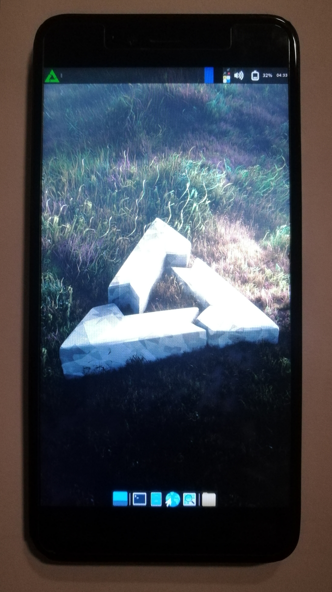

Xiaomi Redmi Note 5A
|
 Xiaomi Redmi Note 5A running XFCE4 | |
| Manufacturer | Xiaomi |
|---|---|
| Name | Redmi Note 5A |
| Codename | xiaomi-ugg |
| Released | 2017 |
| Category | testing |
| Original software | Android 7.1.2, MIUI 11 |
| Hardware | |
| Chipset | Qualcomm Snapdragon 435 (MSM8940) |
| CPU | 1.4 GHz Cortex-A53 |
| GPU | Adreno 505 |
| Display | 720x1280 IPS LCD |
| Storage | 32G |
| Memory | 3GB |
| Architecture | aarch64 |
{kind=link}
| USB Networking |
Works
|
|---|---|
| Flashing |
Works
|
| Touchscreen |
Works
|
| Display |
Partial
|
| WiFi | |
| FDE | |
| Mainline | |
| Battery |
Works
|
| 3D Acceleration | |
| Audio |
Broken
|
| Bluetooth | |
| Camera | |
| GPS | |
| Mobile data | |
| SMS | |
| Calls | |
| USB OTG | |
| NFC |
Unavailable
|
| Accelerometer | |
|---|---|
| Magnetometer | |
| Ambient Light | |
| Proximity | |
| Hall Effect | |
| Barometer | |
| Power Sensor | |
| Camera Flash | |
|---|---|
| Keyboard |
Unavailable
|
| Touchpad |
Unavailable
|
| USB-A |
Unavailable
|
| HDMI/DP |
Unavailable
|
| Ir TX | |
| Ir RX | |
| Stylus | |
| Haptics | |
| Ethernet | |
| FOSS bootloader |
Broken
|
Contributors
- Flafflar
Users owning this device
How to enter flash mode
While the phone is off, hold the Power + Volume Down buttons together for a few seconds.
How to enter EDL mode
EDL mode (Emergency Download Mode) is a special mode in Qualcomm devices that allows, among other things, flashing firmware even when the phone is completely bricked. This might come useful in case something goes extremely wrong and the device won't even boot to fastboot.
To boot into EDL, you must first disassemble the device in order to expose the motherboard points required. This phone is very easy to disassemble, you can search for videos on YouTube if necessary. Once you have removed the back case and disconnected the battery, find the points shown below on the motherboard:
{kind=link}
These are the test points that enable EDL mode. With the battery disconnected, use a metal tweezer or a small wire to short these two points. While keeping them sorted, plug the phone to a computer. The device should show up as "Qualcomm HS-USB QDLoader 9008". You can now use this tool to download firmware to your device.
Installation
Display
Both the display and the touchscreen work normally, although the interface won't show up if you are using LightDM. This happens because for whatever reason logind does not recognize the user's session as graphical. To fix this, edit /etc/lightdm/lightdm.conf and add the line logind-check-graphical=false to force LightDM to start the graphical session. See this article for more info: Display_manager#CanGraphical_issue.
The display also has trouble waking up after being put to sleep. The backlight is enabled as expected, but the screen stays blank.
The following error appears in the kernel log when the screen falls to sleep:
[ 203.062450] gf3208: [info] goodix_fb_state_chg_callback go to the goodix_fb_state_chg_callback value = 16
[ 203.062549] gf3208: [info] goodix_fb_state_chg_callback go to the goodix_fb_state_chg_callback value = 16
[ 203.062552] gf3208: goodix_fb_state_chg_callback defalut
[ 203.062819] [FTS]do_ts_resume_work start.
[ 203.062822] [FTS]fts_ts_resume: Enter
[ 203.062824] [FTS]Already in awake state
[ 203.062827] [FTS]fts_ts_resume: Exit(1353)
[ 203.062828] [FTS]fts_ts_resume fail.
[ 203.062830] [FTS]do_ts_resume_work end.
[ 203.062836] bq2560x: bq2560x_system_temp_level_set: bq2560x_system_temp_level_set lvl_sel=0, bq->therm_lvl_sel = 0
[ 203.304470] ysg mdss_dsi_panel_power_off:290
[ 203.304474] ysg mdss_dsi_panel_reset:366
This error appears a minute later:
[ 259.267754] gf3208: [info] goodix_fb_state_chg_callback go to the goodix_fb_state_chg_callback value = 16
[ 259.267775] [FTS]fts_ts_suspend: Enter
[ 259.267778] [FTS]fts_esdcheck_suspend: Enter
[ 259.267780] [FTS]fts_esdcheck_switch: Enter
[ 259.267782] [FTS][Info][ESD]: ESD check stop!!
[ 259.267787] [FTS]fts_esdcheck_switch: Exit(254)
[ 259.267790] [FTS]fts_esdcheck_suspend: Exit(263)
[ 259.267792] [FTS]fts_gesture_suspend: Enter
[ 259.267794] [FTS]gesture is disabled
[ 259.267796] [FTS]fts_gesture_suspend: Exit(322)
[ 259.268046] [FTS]TP set sleep mode , ret=1!
[ 259.268049] [FTS]fts_ts_suspend: Exit(1341)
[ 259.268143] bq2560x: bq2560x_system_temp_level_set: bq2560x_system_temp_level_set lvl_sel=0, bq->therm_lvl_sel = 0
This error appears when the screen is waking up:
[ 270.136859] PMIC input: code=116, sts=0x5
[ 270.137247] gf3208: [info] goodix_fb_state_chg_callback go to the goodix_fb_state_chg_callback value = 16
[ 270.137493] [FTS]do_ts_resume_work start.
[ 270.137496] [FTS]fts_ts_resume: Enter
[ 270.137498] [FTS]Already in awake state
[ 270.137501] [FTS]fts_ts_resume: Exit(1353)
[ 270.137503] [FTS]fts_ts_resume fail.
[ 270.137505] [FTS]do_ts_resume_work end.
[ 270.137510] bq2560x: bq2560x_system_temp_level_set: bq2560x_system_temp_level_set lvl_sel=0, bq->therm_lvl_sel = 0
[ 270.139191] ysg:mdss_dsi_panel_power_on:323
[ 270.139219] ysg mdss_dsi_panel_reset:366
[ 270.209106] swb.mdss_dsi_panel_power_on:get lcd_detect id0=0,id1=0
[ 270.257077] tsx_feature_type=0,ce_state=0
[ 270.299617] PMIC input: code=116, sts=0x4